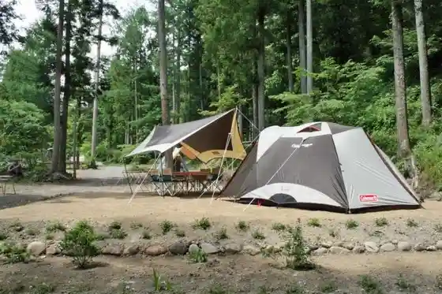
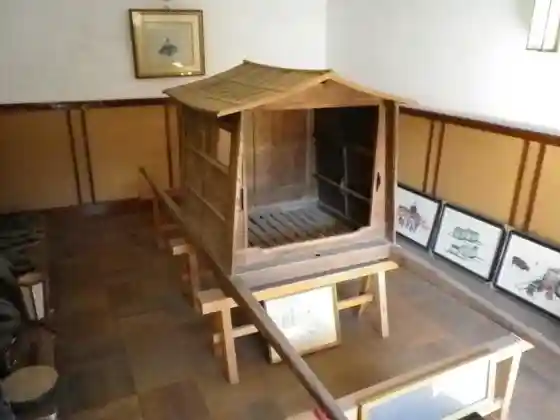
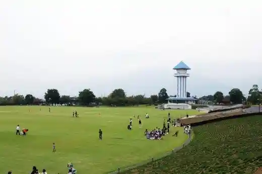

Kiyokawa Tsuri Hori
Kai, Yamanashi · 055-277-0015 · Official / source link
Futaba no no Eki
Kai, Yamanashi · 0551-20-0035 · Official / source link
Bigguhon'oto Campground
Kai, Yamanashi · 055-277-0080 · Official / source link

Tsune Setsu Tera
Kai, Yamanashi · 055-277-3727 · Official / source link

Doragon Park (Akasaka Dai General Park)
Kai, Yamanashi · 055-276-2161 · Official / source link

Kuriin'enerugii Center (Hatsuden Sogo Seigyo Tokoro)
Kai, Yamanashi · 055-278-1211 · Official / source link
Rakan Terayama
Kai, Yamanashi · 055-278-1708 · Official / source link
Santorii Tomi no Oka Wainarii
Kai, Yamanashi · 0551-28-7311 · Official / source link
Yagi Hane Mizumi
Kai, Yamanashi · 055-278-1708 · Official / source link
Shikishima Sogo Culture Hall
Kai, Yamanashi · 055-278-1697 · Official / source link
Kai Iwamori no Hanahata
Kai, Yamanashi · 055-278-1669 · Official / source link
Shingen Tsutsumi
Kai, Yamanashi · 055-278-1708 · Official / source link
Jisho Tera Cherry Blossoms
Kai, Yamanashi · 055-278-1697 · Official / source link
Sansha Shrine
Kai, Yamanashi · 055-278-1697 · Official / source link
Shikishima General Park Oyobi Ume Village
Kai, Yamanashi · 055-278-1669 · Official / source link
Tachi Okayama
Kai, Yamanashi · 055-278-1708 · Official / source link
Akasaka Dai General Park [ Doragon Park ]
Kai, Yamanashi · 055-276-2161 · Official / source link
Shingen Tsutsumi Park Shingen Hashi
Kai, Yamanashi · 055-278-1708 · Official / source link
no Su Land Kyanpazubirejji
Kai, Yamanashi · 055-277-0105 · Official / source link
Shatorezeberuforewainarii
Kai, Yamanashi · 0551-28-4451 · Official / source link
Shikishima Jozo
Kai, Yamanashi · 055-277-2805 · Official / source link
Ryuo Eki Namboku Jiyu Tsuro Yamanami Mi Byupointo
Kai, Yamanashi · 055-278-1708 · Official / source link